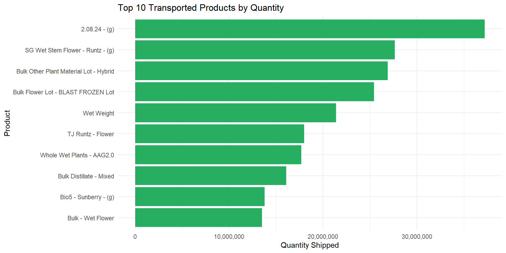

On the Road Again: Cannabis Product Movement Across the State
Analyzing Transportation Patterns & Trading Routes (2023-2025)
CCRS
Transportation
Supply Chain
3Years
The Bottom Line Up Front
A data-driven look at logistics, bottlenecks, and shipment volumes. Transportation manifests offer critical insight into the scale, flow, and hotspots of the cannabis supply chain. Understanding shipping trends can help optimize logistics, improve regulatory compliance, and identify supply bottlenecks.
Transportation Overview
Transportation is the hidden backbone of Washington’s cannabis industry. As CCRS data becomes more structured and complete, transportation visibility is emerging as the next frontier in understanding wholesale and retail dynamics.
This report explores the flow of cannabis products across Washington, based on CCRS manifest data. It draws from two key tables:
manifest_header_master: Shipment metadata (origin, destination, date)
transported_items_master: Shipment contents
Why Transportation Visibility Matters
Transportation drives three critical industry functions:
✔ Operational Efficiency
Efficient routing lowers delivery costs, enables faster inventory turnover, and stabilizes retail stock availability.
✔ Compliance & Traceability
Every shipment must be logged, traceable, and compliant with CCRS. High-volume lanes and repeated bilateral transfers reveal central distribution hubs functioning as de-facto logistics centers.
✔ Market Insight
Transport data highlights:
Who distributes at scale
Which retailers receive the highest volume
Seasonal surges in supply movement
Potential congestion or inefficiencies at destination nodes
In a maturing market, transportation data becomes a predictive signal of retail performance and product availability.
Number of Shipments by Month
Top Shipping Routes
Top Transportation Routes: Who Moves the Most?
The largest shipment lanes show a dense network of vertically integrated operators, distribution-heavy producers, and high-volume retail destinations.
Top 20 Shipment Routes (2023–2025)
(by manifest count)
| OriginLicenseName | DestinationLicenseName | ShipmentCount |
|---|---|---|
| LUX POT SHOP | LUX POT SHOP | 767 |
| PHAT N STICKY | GROW OP FARMS | 542 |
| TTL HOLDINGS LLC | TTL HOLDINGS LLC | 510 |
| FORBIDDEN FARMS | ZIPS CANNABIS | 492 |
| NORTHWEST CANNABIS SOLUTIONS | Integrity Labs | 393 |
| GROW OP FARMS | NIRVANA CANNABIS COMPANY | 386 |
| NORTHWEST CANNABIS SOLUTIONS | ZIPS CANNABIS | 378 |
| 1555 INDUSTRIAL LLC | MAMA JS | 349 |
| NORTHWEST CANNABIS SOLUTIONS | NIRVANA CANNABIS COMPANY | 349 |
| LIFTED CANNABIS | Confidence Analytics | 313 |
| BLUE ROOTS CANNABIS | BLUE ROOTS CANNABIS | 312 |
| ROLLING FARMS | NIRVANA CANNABIS COMPANY | 308 |
| CRAFT ELIXIRS | CRAFT ELIXIRS | 307 |
| MOMMA CHAN | MGE DISTRIBUTIONS LLC | 297 |
| LIFTED CANNABIS | ZIPS CANNABIS | 294 |
| GROW OP FARMS | THE KUSHERY | 294 |
| MAMA JS | 1555 INDUSTRIAL LLC | 291 |
| EDGEMONT GROUP LLC | ZIPS CANNABIS | 290 |
| GROW OP FARMS | THE HERBERY | 289 |
| PRISMATIC BRANDS | COMMENCEMENT BAY CANNABIS | 285 |
Key Observations
Vertical integration is common: Many of the top routes are self-to-self movements (e.g., LUX POT SHOP → LUX POT SHOP). This indicates centralized processing before final distribution.
Three major distribution hubs emerge: Grow Op Farms, Northwest Cannabis Solutions, and TTL Holdings appear repeatedly across unrelated routes, acting as logistics anchors for smaller brands.
Retail chains create dense inbound networks: ZIPS Cannabis, Nirvana, and The Kushery collectively account for thousands of inbound shipments.
Key Observations
Vertical integration is common: Many of the top routes are self-to-self movements (e.g., LUX POT SHOP → LUX POT SHOP). This indicates centralized processing before final distribution.
Three major distribution hubs emerge: Grow Op Farms, Northwest Cannabis Solutions, and TTL Holdings appear repeatedly across unrelated routes, acting as logistics anchors for smaller brands.
Retail chains create dense inbound networks: ZIPS Cannabis, Nirvana, and The Kushery collectively account for thousands of inbound shipments.
Shipment Volume by Month
| Month | Total Shipments |
|---|---|
| Jan–Dec 2023 | Mostly 1–5 per month |
| Jan–Apr 2024 | 1–11 per month |
| Jul 2024 | 485 |
| Aug 2024 | 566 |
| Oct 2024 | 40,736 |
| Nov 2024 | 17,145 |
| Dec 2024 | 34,300 |
| Jan 2025 | 38,894 |
| Feb–Apr 2025 | 32–36k per month |
| Aug 2025 | 6,134 |
| Sept 2025 | 52,199 |
| Oct 2025 | 34,919 |
What caused this explosion?
Standardized CCRS transport reporting increased dramatically beginning mid-2024.
Several large operators transitioned to more centralized distribution models.
Retail chains consolidated purchasing, creating higher-frequency, higher-volume transport lanes.
Potential Bottlenecks: High Volume Origins or Destinations
Identifying Transportation Bottlenecks
We aggregated incoming shipments per retailer to identify destination bottlenecks—retailers that receive disproportionately high inbound shipment volume and may face:
Receiving delays
Storage and backroom congestion
Frequent restocking cycles
Staff workload spikes
Top 20 Potential Bottlenecks
| Destination | Incoming Shipments |
|---|---|
| ZIPS CANNABIS | 9,934 |
| UNCLE IKES | 5,164 |
| COMMENCEMENT BAY CANNABIS | 4,482 |
| THE KUSHERY | 4,358 |
| CANNAZONE | 4,168 |
| THE HERBERY | 4,155 |
| CINDER | 3,955 |
| BLOOM | 3,560 |
| CLEAR CHOICE CANNABIS | 3,534 |
| PRC | 3,326 |
Interpretation
These retailers function as regional demand hubs. High shipment volume often means:
Dependence on rapid inventory turnover
Frequent procurement cycles
Upstream suppliers scheduling deliveries around specific buyers
This is also where logistics strain is most visible in the system.
Item Volume by Product Type (Top 10)

What Products Move the Most?
Understanding what moves is as important as understanding where and how often shipments occur.
Top 10 Transported Items (by volume)
(Total quantity moved across 2023–2025)
2.08.24 – (g) – 37,012,672 units <- outlier detection and incorrect description use; large shipment on Feb. 8, 2024!?
SG Wet Stem Flower – Runtz – (g) – 27,643,089
Bulk Other Plant Material Lot – Hybrid – 23,751,983
Bulk Flower Lot – Blast Frozen – 22,192,229
Wet Weight – 21,406,570
TJ Runtz – Flower – 18,000,000
Whole Wet Plants – AAG2.0 – 17,699,171
Bulk Distillate – Mixed – 15,809,974
Bulk Wet Flower – 13,517,049
Whole Wet Plants – AAG1.0 – 13,267,576
Observation: Washington’s cannabis transport system overwhelmingly moves bulk biomass, not packaged retail-ready goods. This is a hallmark of vertically integrated models and in-state processing requirements.
Why This Matters for Washington Operators
For Producers & Processors
Shipment frequency can identify potential partnership opportunities with busy retailers.
Understanding bottlenecks helps time deliveries to reduce wait times and avoid rejected shipments.
For Retailers
Destination-volume data provides early warning of staffing or receiving issues.
Retail chains can benchmark efficiency across stores.
For Regulators & Policymakers
** Transportation data highlights structural inefficiencies, consolidation, and potential compliance pressure points.
For Consumers & Researchers
- Shipment flows reveal how product actually moves across the state—driving price, selection, and supply consistency.
The movement of cannabis products across Washington State is one of the most overlooked components of the legal supply chain. While cultivation, processing, and retail metrics receive most of the industry’s attention, transportation activity is where operational efficiency—and risk—often converge.
Using Washington’s CCRS (Cannabis Central Reporting System) transport manifests, the Evergreen Canna Ledger analyzed more than 150,000+ shipments spanning 2023–2025 to understand how cannabis moves, which routes dominate the network, and where bottlenecks signal operational or structural challenges.
At The Evergreen Canna Ledger, our mission is to make these logistics patterns visible, accessible, and actionable—for operators, analysts, policymakers, and the public.
Join the Discussion
Your insights help drive better transparency and smarter policy in Washington’s cannabis industry.